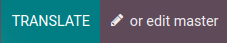

Traducciones¶
El contenido de las páginas de su sitio web (por ejemplo, las cadenas de texto) se puede traducir a distintos idiomas desde su sitio web.
Su sitio web se muestra en el idioma que coincide con el idioma del navegador del visitante, a menos que ese idioma en particular no se haya instalado. En este caso, el sitio web se muestra en el idioma predeterminado. El visitante todavía puede elegir otro idioma en el menú de idioma.
Instalar idiomas¶
Para traducir su sitio web, primero debe agregar los idiomas necesarios:
Vaya a su sitio web.
Diríjase a la parte inferior de la página al menú de idioma.
Haga clic en el idioma y seleccione Agregar un idioma.

Haga clic en el campo Idiomas y seleccione el idioma deseado en la lista desplegable, repita este paso para cada idioma adicional.
Haga clic en el botón Agregar.
Truco
También puede editar los idiomas de su sitio web desde el backend, en Ajustes. Vaya a y agregue o elimine los idiomas requeridos en el campo Idiomas en la sección Información del sitio web .
Idioma predeterminado¶
El contenido se mostrará en el idioma predeterminado en caso de que el idioma del navegador del visitante no esté instalado en su sitio web.
Para definir un idioma predeterminado, vaya a y seleccione un idioma en el campo Predeterminado.
Nota
Este campo solo es visible si ya están configurados varios idiomas para su sitio web.
Traducir el contenido¶
Una vez que se han agregado los idiomas, puede traducir el contenido de su sitio web. Vaya a su sitio web, seleccione el idioma en el menú de idioma y haga clic en el botón Traducir en la parte derecha de la barra de tareas para activar el modo de traducción.
Como resultado:
las cadenas de texto que ya han sido traducidas se resaltan en verde;
las cadenas de texto que necesitan ser traducidas se resaltan en amarillo.
A continuación, puede reemplazar el texto original con la traducción haciendo clic en el bloque, editando su contenido y guardando.
Truco
Una vez que instaló los idiomas, también puede traducir algunos elementos (por ejemplo, el nombre y la descripción del producto) desde el backend (por ejemplo, en la plantilla del producto). Para ello, haga clic en el código de idioma (EN o el que corresponda) junto al texto que desea traducir (en este caso, el nombre del producto) y agregue la traducción.

También puede exportar o importar traducciones para traducir varios elementos (por ejemplo, nombres de productos y descripciones) en un solo paso.